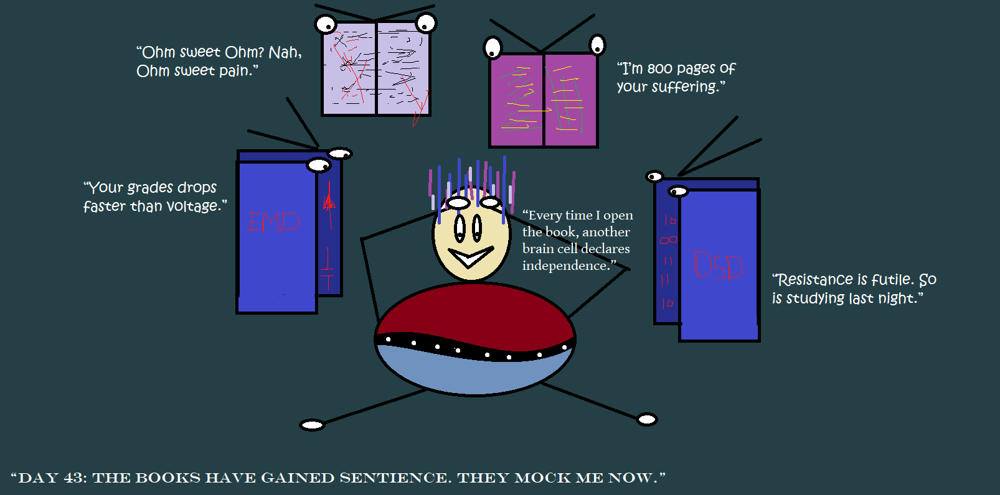
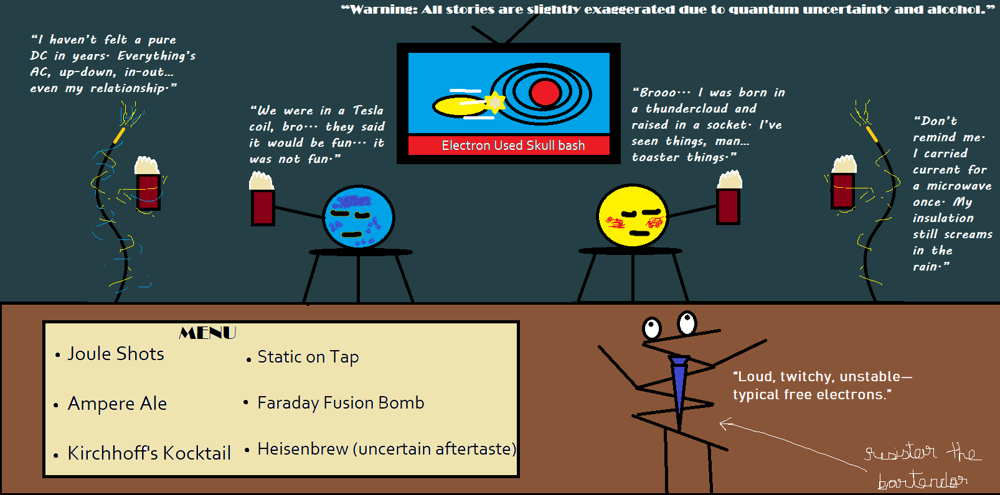
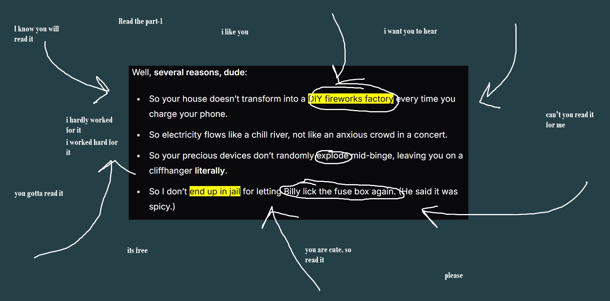
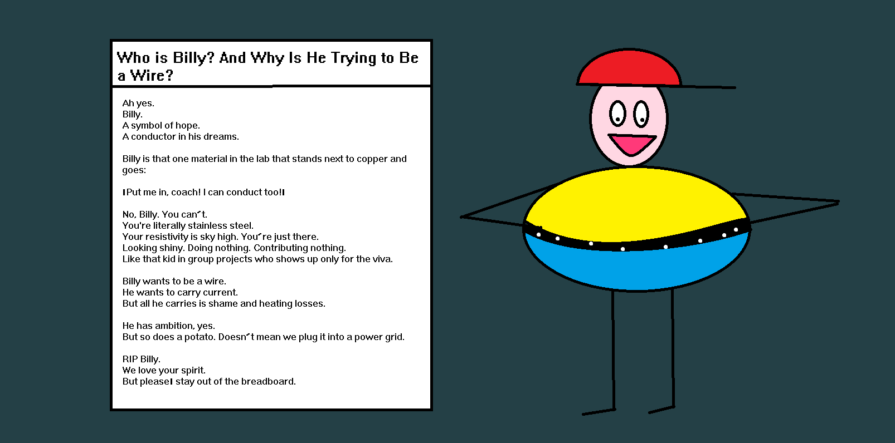
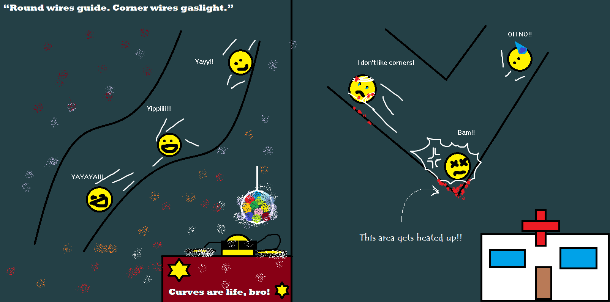
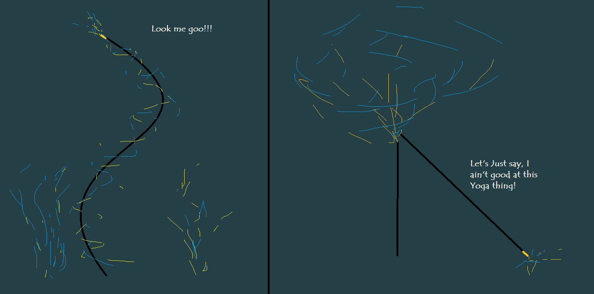
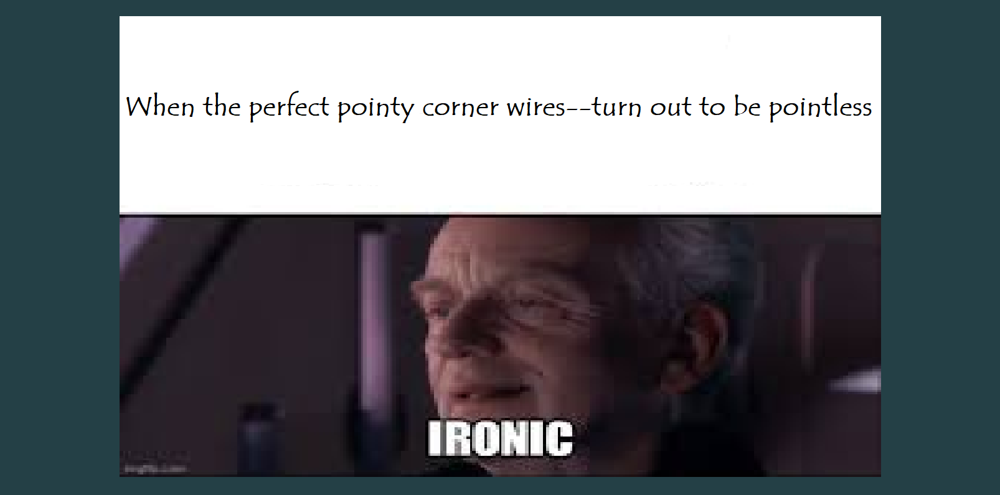

Aha, It’s day 2 of you being tied up and tortured with electrical textbooks. More resilient than I thought!
Yesterday, we got the electrons in our wires moving!
We figured out why conductors are the cool kids and insulators are the outcasts.
We found out that voltage isn’t just a force — it’s a full-blown tyrant with a God complex.
And that the wire itself? Oh, it has potential, alright.
It just needs someone to bully it into action — cough cough, battery supremacy.

NOW!
We set sail into the kingdom of “good” and “less good” conductors.
(And yes, copper has a crown. Aluminium’s in the corner. And iron? Iron’s just… trying its best.)
But see, here’s where wires stop being “just chill copper paths”
and start revealing their true form:
Passive-aggressive, overachieving, sabotaging gremlins with resistance issues, commitment problems (aka capacitance), and trauma responses (inductance) when current changes too fast.
In this classy new regime, wires don’t just “connect.”
They degrade, distort, and disappoint.
They’re not just part of the circuit — they actively ruin it while acting innocent.
Resistance: When Wires Friendzones Electrons
So, apart from your appliances cooking up your voltage, guess who else is sneakily munching on your energy?
The wires themselves.
Yes.
Your humble-looking, coppery boys? They're not just innocent messengers. They’re thieves.
You thought wires were some kind of free highway for electrons?
Nah bro. It’s a slightly bumpy ride. Think of it as… Bangalore traffic at 6 PM.
See, a wire — any wire — is basically a lowkey appliance.
Not big and bulky like your toaster, but still consuming a slice of the voltage’s effort.
Voltage is out there pushing with all its dictator energy, and the wire's like:
“Cool cool, but Imma make your electrons suffer a bit.”
Let’s flip open the page of conductors again — aka the materials we beg to carry current.
Picture this:
A drunk subatomic particle (aka an electron) loitering in a metal jungle full of atoms just vibing in place.
Now enter the tyrant king — the Battery — who’s basically yelling:
“MOVE, you lazy charged bean! That way! NOW!!”
And the electron’s like:
“SKULL BASH ATTACK!!!” (yes, that’s a Pokémon reference, deal with it)
— and slams straight into an atom. Boom. Deflected. Staggered. Confused about life choices.

This happens again. And again.
Every time it tries to move forward, it runs into something.
So the actual flow — the nice, clean directional march of electrons?
Slowed. Down.
So what just happened?
That beautiful metal you trusted with your hopes and current?
It resisted.
Now pause your caffeinated meltdown and imagine this:
What if the material had more atoms in the way?
Or more spaced in weird ways?
Or atoms that just love smashing into electrons like it’s WWE Raw?
More collisions → less speed → more resistance.
That, dear reader, is what separates a good conductor from a meh one.
Copper? Elegant, minimal collisions, lets electrons zip through.
Iron? Bit more of a bouncer, makes ‘em wait in line.
And insulators?
LMAO they don’t even go here. They’re not part of this discussion. They’re the monks who’ve sworn off electrons.
Why Care About Resistance?
Like fr, what's the big deal if these poor metal bois nibble off some of that voltage?
Let them eat a little, no?
Even Billy (yes, that Billy — reference alert ⚠️) wants to be a wire.
He’s just standing there… conducting… nothing. But dreaming.
Right?
WRONG.
Now you’re about to understand those four consequences I screamed about in Part 1.

→ If you skipped Part 1, go read it.
READ. THAT. DAMN. PART-1. FOR GOD’S SAKE.
🔥 If you’ve been tied up and tortured by electrical textbooks — CLAP YOUR DAMN HANDS
Yes. CLAP.
Clap like your annoying sibling just passed with grace marks.
Clap harder.
HARDER.
Feel that heat?
That sweet, sweet burning friction between your palms?
That's energy, my friend. That’s collisions turning into heat.
You just simulated electron suffering in real-time.
Because when those poor electrons go “Skull Bash!” into atoms inside a wire, the kinetic energy from all that chaos gets converted into heat.
So if you’re using a bad conductor —
Congratulations! It’s Diwali in your circuit.
Or maybe Christmas — because your wire’s now a decorative light strip from hell.
And insulators?
Oh, those divas don’t even let electrons in.
They just sit there — all “Ugh, I don't do current, sorry.”
💸 Consequence #2 — Power Loss aka “Wire is a THIEF”
The wire doesn’t just “pass the current” like a good citizen.
It steals.
That voltage your battery lovingly pushes? The wire eats some.
That’s why you need metals with honesty and integrity.
Copper is a soft-spoken gentleman:
“Yes, sir. I’ll carry the electrons with minimal resistance.”
Meanwhile, something like nichrome is like:
“I will eat your voltage and give you nothing but heat.”
😤 Consequence #4 — Come ON, BRUH
Really? You want me to explain this?
Scroll up. Re-read.
Re-evaluate your life.

The Shape Of Sanity
Now, let’s talk about those curves. YEAH!!!
Why COILS? Seriously—why coils? Why can’t wires be star-shaped or rectangular… you know, sturdy… with perfect corners that edge you. I mean edges—yeah, edges. I like edges. They’re so hot. Ninety degrees hot. So perfectly edgy. Kkk k k k k, back to wires.
So why this spaghetti-shaped mess? Did Italians invent this? Mamma mia! No hate, I love pizza too — it’s round, and I love round stuff too (Newton’s First Law applies).
But here’s the real reason behind your raging curiosity…
🔥 #1 Minimal Surface Area = Less Resistance (a.k.a The \"Don't Be Square\" Rule)
Round wires are basically the yoga instructors of circuits — zen, flexible, centered. Minimal surface area, maximum chill. They vibe with electrons. Let 'em flow. No drama.
But square wires? Oh boy. That’s your gym bro with anger issues and sharp elbows. He corners electrons like a toxic ex in a group chat.
And guess what? Electrons hate corners. They don’t gently glide into 90 degrees — they slam, pile up, and get spicy. We're talkin’ microscopic road rage.
Result?
Hotspots.
Literal ones. Like your charger brick when you fall asleep watching YouTube on 2% battery. Your sexy, geometrically perfect corners? They're now thermal death zones.
90 degrees? More like 90 degrees Celsius, baby.

And when those corners start cooking, your insulation starts crying.
Yes, the plastic wrapper — the one thing between you and fiery doom — begins to melt, crack, and release gas.
No, not the funny kind.
The nauseous, cancer-scented kind that makes you cough like you're in a 2003 internet café.
You?
Throwing up.
Electrons?
Running away.
Circuit?
Dead.
So yeah. Round wires. Not just a vibe — a survival tactic.
⚡ #2 Electric Field Distribution is Smoother
(For the Advance Folks. Not for Cuties. Shoo!)
Alright, alright — gather around, you ego-fueled engineering mantises, you Maxwell munchers, you “I drink EM fields for breakfast” type beat.
This section ain’t for the cuties.
Cuties, no peeking. Go back to hugging your LED blinkers.
This right here is the secret sauce — the kind of stuff that makes electric fields moan.
Let’s start with your favorite geometry trauma: sharp edges.
Cuboidal wires? Yeah, great. Until they concentrate electric fields like a chaat vendor hoarding spicy chutney in one corner.
That over-spiced region? Boom — corona discharge (not the beer, not the virus, the sparky sparky danger noodles in high voltage wires).
Also known as:
💀 Energy leakage
💀 Dielectric breakdown
💀 Insulation becoming depression incarnate
And you know what comes next?
Localized heating.
Because why not? Add some spontaneous combustion to your Monday.
Now — let’s bring in the hero: cylindrical wires.
These beauties?
No corners. No drama.
They’re the smooth-talking diplomats of electricity — evenly distributing fields like Oprah handing out cars.
No sparky tantrums.
No melty insulation.
Just good vibes and flowing electrons.
So yeah, now your advanced ego is fed.
You field-obsessed, simulation-addicted, dielectric-daydreaming narcissists.
You're welcome.
⚙️ #3 Ease of Drawing and Manufacturing
(a.k.a. The Roti Engineering Principle)
Look, even your lazy cousin who thinks HDMI is a sandwich would get this one.
Ever tried making rotis?
Yeah, yeah, stop lying — we all know you end up with abstract art instead of a circle.
But here’s the thing:
Making things round is natural. Easy. Zen.
You roll, it rolls — symmetry, peace, chakras aligned.
Now swap that dough for red hot metal and you’ve got wire drawing.
You just pull it through a circular die — boom: a round wire. Simple. Satisfying. Like that one perfect roti your mom let you flex on Instagram.
But now imagine making square wires.
You wanna shove molten metal through a SQUARE HOLE?
Good luck, Sith Lord of Stupidity.
That’s not just hard — that’s engineering masochism.
Also, try coiling a flat or square wire. Go on, try it.
It’ll twist, fight, and rebel harder than your WiFi during exams.
Round wires?
They just chill. Wrap easy. Stack nice. Don’t complain.
So yeah — square wires are not just dumb, they’re POINTLESS.
Oh the irony, Sith Lord.
Even you can’t Force-choke this truth.
🧘♂️ #4 Flexibility and Mechanical Strength
(Yoga, Tantrums, and That One Guy Who Does Nothing in Group Projects)
Round wires? They do yoga. They’re flexible. Chill.
They handle stress like that one calm topper who actually sleeps before exams.
Cuboidal wires?
They snap. Like your mental health during vivas.
You bend ‘em? The edges start screaming like drama queens — \"Ouch! Too much stress at my corner, I can’t take this!\"
Bro, calm down, it’s just a lab bend.

Here’s the physics tea:
Round wires distribute mechanical stress evenly when bent.
They stretch, flex, and recover like seasoned gymnasts.
Square wires?
They’re more like your “motivated” teammates — stiff, uneven, and they crack under pressure.
Also, imagine coiling a cuboidal wire. It folds like a soggy biscuit, kinks up, and loses structural integrity faster than your excuses for not submitting assignments.
Moral of the story:
Go round, or go home.
🧯 #5 Insulation & Safety
(When Wires Wear Jackets — or Forget Them and Set Everything on Fire)
Wrapping a round wire?
It’s like giving a log a warm, perfect hug.
Smooth. Symmetrical. Like applying sunscreen on your biceps — every curve covered, baby.
Square wire?
Oh no. That’s like hugging a damn brick — you miss corners, the jacket rides up, and the wire’s basically half-naked in public.
Insulation machines hate corners. They skip them. That’s how your wire ends up with exposed nerves — wait, I mean metal — same thing.
One spark and BOOM — suddenly your “smart project” is “smoke detector testing apparatus.”
Plastic insulators get all wobbly and uneven on square wires.
Stress piles up at the corners, the coating gives up, and your lab partner's eyebrows are now part of history.
So unless you want your breadboard to reenact Mission Impossible,
stick to round wires — for safety, sanity, and the sweet smell of non-burnt circuits.
Quick Facts About Wires
(a.k.a. the ancient cursed scrolls of Electrons Unleashed)
The history buff in me snuck out last night and dug into the dusty archives of wire lore just for you—-
🧔♂️ Who made the first wire?
Some ancient human looked at a lump of copper and said,
“What if I pull this into a noodle and make Zeus run through it?”
Boom. 2000 BCE, Egypt. They used beaten gold wires for jewelry. Not for circuits — but hey, flex is flex. The gods had drip.
💡 When did actual electric wires happen?
Fast forward to 1800s — after humans realized static shocks weren’t ghosts slapping them.
Post-Volta (yep, the battery guy), wires got serious. We’re talkin’ copper ropes carrying angry electrons to light up bulbs, confuse frogs, and eventually fuel TikTok.
Aha, nay — who taketh pleasure in the dusty annals of yore? Let us henceforth lay aside these ancient scrolls, and with haste repair unto the sparkling nectar of science, where true marvels do abound!

🧲 Sciency WTF Fact #1:
A wire carrying current generates a magnetic field. Meaning your charger cable is lowkey a magnet snake.
Wrap it in loops? BAM — electromagnet. Wrap it right? You just made the most ADHD version of a transformer.
🧪 Sciency WTF Fact #2: That’s all I got! Seriously, what do you take me for—a Yap-God who can babble endlessly about something as ‘simple’ as wires for two whole articles? Nonsense—who in their right mind would do that?
Real World Occurances
Wires are the unsung heroes, quietly humming behind every gadget you own. From your phone charger to that weird glowing sock dryer nobody asked for, wires are just doing their thing — no applause, no drama.
So yeah, no wild tales here, just the steady grind of wires keeping your world powered. Sometimes, that’s all the story you need.
Philosophy? Why not?
Every wire is meant to find its socket—no, not that kind of socket, get your mind outta the gutter! I mean, every wire’s purpose is to complete a circuit, to light up the path it’s designed for.
Likewise, every individual has a unique path to fulfill, a connection to make that brings their own light to life. But if you wander down paths meant for others, not your own, you might never find it. No right connection, no spark. No spark, no glow.
In the grand circuitry of existence, finding the right connection is what ignites the brilliance within.
“Find Your Right Socket!”___some mad caffeinated genius probably said that while staring at a wire.
What’s Next?…
Two long days—maybe you need a little rest! OK, I’ll leave you this time.
For now, let’s keep untangling these sneaky snakes of circuits. By the way, our next victim must be decided!
I never liked Edison anyway — light bulb, count your days.
But that’s a story for next time.
See you soon.
Welcome to Rant-Electronics.
This is not a tutorial.
This is therapy.